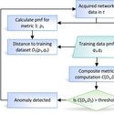
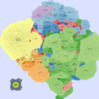

Scenarios
Two scenarios were created to demonstrate the usefulness of IMap. First, we use a sequence of heat maps to show the evolution of a DDoS attack. In the second scenario, we used real data [1] from a worm propagation event to study the origins of the worm and its propagation patterns. We used the CAIDA UCSD IPv4 Routed /24 Topology Dataset[2] to build the underlying AS topology in the IMap generation process.
{kind=link}
{kind=link}
{kind=link}
{kind=link}
{kind=link}

{kind=link}
Flowchart of the anomaly detection process
DDos
From left to right: Intervals 1 to 5 with heat maps generated with different metrics. First line shows results for metric C1, while the second line shows results for metric C2.
{kind=link}
{kind=link}

DDoS attack, Interval 3, Metric c1. Botnet attack

{kind=link}
DDoS attack, Interval 4, Metric c1
{kind=link}

DDoS attack, Interval 1, Metric c2

DDoS attack, Interval 2, Metric c2

DDoS attack, Interval 3, Metric c2. Botnet attack

DDoS attack, Interval 4, Metric c2

DDoS attack, Interval 5, Metric c2. Botnet attack
CodeRed Worm
Heat maps for CodeRed Worm propagation.

Worm initially spreads

Worm initially spreads

Reaches several countries at once

Propagates to several ASes within the same country

Attains the peak of activity